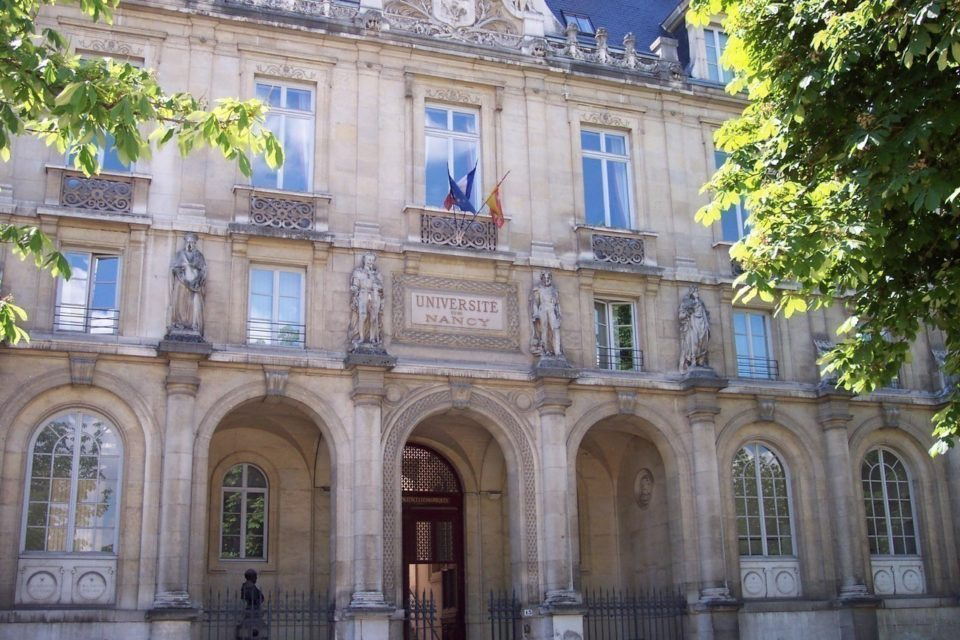
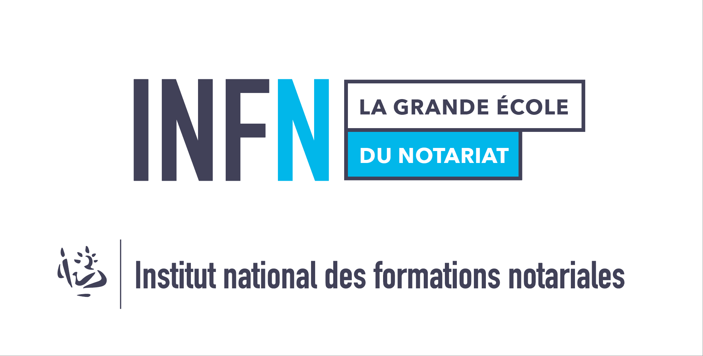

FlorineJacquard
Licence de Droit
En recherche d’alternance pour
le diplôme des Métiers du notariat (DMN)
Début souhaité du contrat : 1er septembre 2022
Diplôme préparé : Diplôme des Métiers du Notariat (DMN)[Bac +4]
Localisations :
Annecy
Rythme : 3 semaines en office - 1 semaine en cours
Financement : OPCA
Aide exceptionnelle à l'employeur (alternance) : 8000€
Cotisations sociales anuelles : 200€
Salaire brut annuel (convention collective notariat) : 22 712,40€
Coût total annuel du contrat :
14 912,40 €
A proposde moi
Après l’obtention en 2019, d’un Baccalauréat économique et social, c’est avec beaucoup d’impatience que j’ai pu intégrer la Licence de droit proposée par la faculté de droit, sciences économiques et de gestion de Nancy. Initialement animée par le souhait de devenir magistrate, ma curiosité fut, au cours de ma première année, piquée par la découverte du droit des biens. Mon attrait pour les matières relatives au notariat ne m’a plus quittée depuis et s’est renforcé au cours de mes des différentes expériences en office. Aujourd’hui diplômée d’une Licence en droit, je souhaite poursuivre mon parcours avec une alternance pour préparer le DMN.

Mon projet professionnel
Je souhaite désormais poursuivre mon parcours dans une voie plutôt professionnalisante que purement théorique avec le diplôme des Métiers du Notariat en alternance.

Guide de la Formation
Mon expérienceprofessionnelle
Stagiaire, Cabinet Honnet
Date : Trois jours en 2018
Stagiaire, Vice-Procureur de la République de Troyes
Date : Trois jours en 2019
Stagiaire, Office notarial de Maître Desgroux
Date : Juin 2021
Bénévole Juriste, Association de Défense des Consommateurs de France
Date : Trois jours en 2018
compétences développées : savoir-être, capacité d'analyse, apprentissage rapide
Bilan du stageAssistance rédaction, Etude notariale Depoisson-Royer-Nicolas
Date : Août 2021
compétences développées : savoir-être, capacité d'analyse, capacités rédactionnelle
Droits abordés : Droit immobilier, Droit notarial, Droif de la famille, Droit rural
Actes vus :
Lettre de recommandationActuellement :
Assistance rédaction, Etude notariale Depoisson-Royer-Nicolas
Date : Juillet 2022 - Août 2022 (à venir)